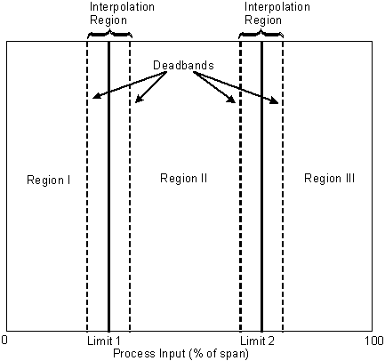

PID_GAINSCHED module template
This PID loop module provides for scheduling of GAIN, RESET, and RATE based on the value of a process input within a three-region range. Tuning parameters are specified for each region. The PID block parameters are calculated from the process input, two limit values that define the boundary between regions, and a deadband value used to interpolate between regions for smooth transitions. The process input is selected to be either the PV or OUT of the PID block or an auxiliary variable.
Theory of operation
PID control with gain scheduling is used to reduce the effect of process nonlinearity on the control loop's performance. The approach used here assumes the process is nonlinear, but has linear behavior within each of two or three process regions. Within each region pre-defined PID tuning parameter settings (GAIN, RESET, and RATE) are used. The PID settings are switched automatically when the process moves into a different region. To prevent abrupt changes to PID settings and subsequent process bumps, the gain scheduler uses an interpolation range between regions to provide smooth transitions. Within the interpolation range, the PID settings are calculated using a linear interpolation of the configured settings for the adjacent regions.

Configuration of the gain scheduler module includes defining the process input used to determine the state of the process, that is, where the process currently is operating within its range. The process input can be the PV or OUT of the PID block or an auxiliary variable. An example of when to choose the PV as the reference variable is pH control. The process curve of a pH control loop has the highest gain in the middle region based on the actual pH. The gain may be one or two orders of magnitudes higher than the gain in the lower and upper region. An example of when to use OUT as the reference value is for a temperature control loop with split range control for heating and cooling. An auxiliary variable would be used as a reference, for example, when the process nonlinearity is a function of process throughput. The auxiliary variable measures the current process throughput in this case.
Configuration of the gain scheduler module includes defining the interface points, called LIMIT1 and LIMIT2, between three regions of linearity. Set the limits at points where the PID settings need to change most drastically. The settings used within a region are configured using a manual or automatic tuning procedure. The control module monitors the process and uses the settings you establish for that region. If the process requires only two regions of linearity, set one of the limit values to the far end of the process range.
Use the interpolator to make the change in PID settings more gradual between regions. If the gain characteristics of the loop change over a wide range, the interpolation range between regions may be larger. If the process characteristics change quickly at one point, the interpolation range should be small. The interpolation range is determined by a single DEADBAND parameter that is applied to both limit values. The interpolation range is defined by the limit value plus and minus one-half of the deadband value.
The value of the DEADBAND parameter must be greater than zero.
Configuration
To configure a gain scheduling module, create a module from the module template PID_GAINSCHED using the DeltaV Explorer. You can use the DeltaV Explorer or Control Studio to customize the module's properties and configuration parameters. Note that you must use Control Studio if you want to use an auxiliary variable as the reference variable. If so, create an external reference parameter for the variable using an Internal Read special item and wire it into IN3 of the MLTX1 block.
As an alternative, the gain scheduling module can be configured from the detail display in DeltaV Operate if you have the Tuning and Restricted Control privilege.
Use either of the standard PID module dynamos, PID LOOP 1 or PID LOOP 2 for a gain scheduling module. The faceplate for the gain scheduling module is the standard PID faceplate, but the detail display is unique to the gain scheduler. The faceplate and detail display names are predefined as module properties.